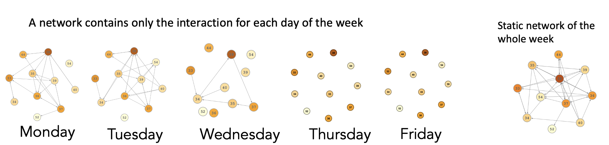
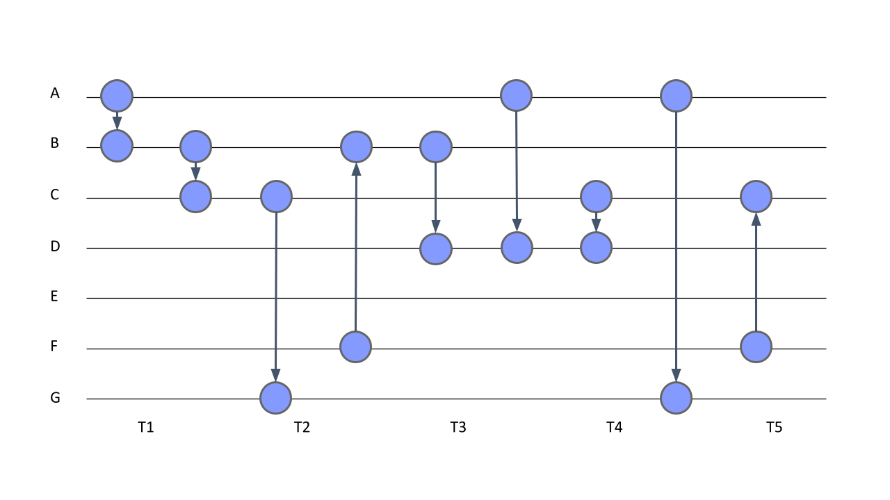
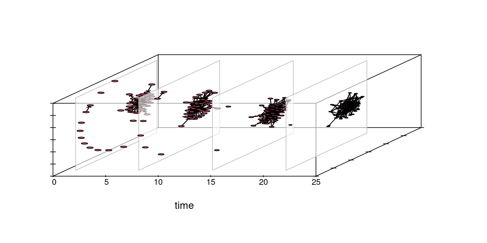
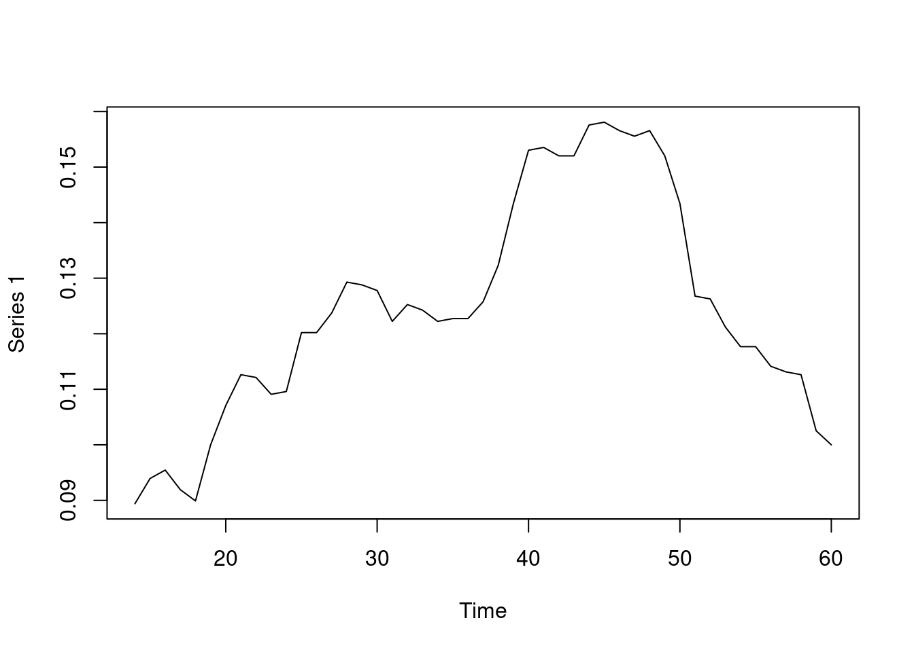
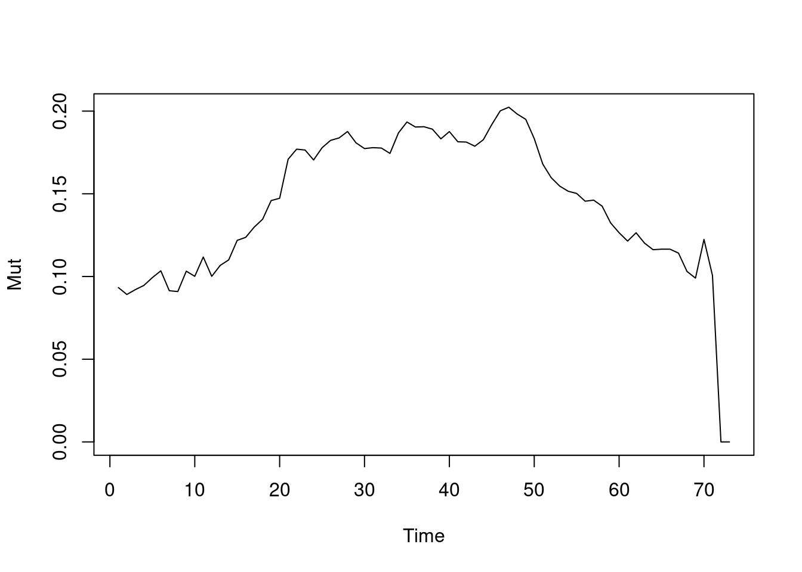
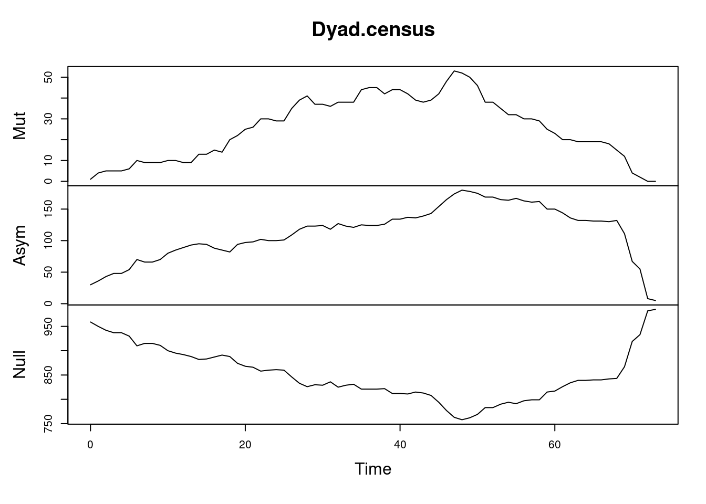
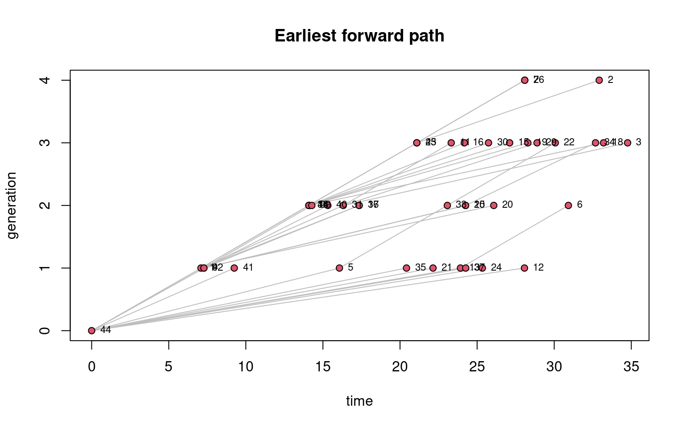
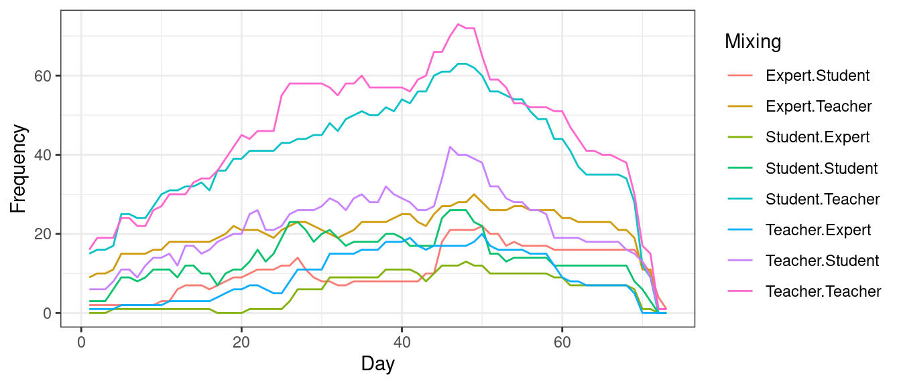

library(tsna)
library(ndtv)
library(networkDynamic)
library(tidyverse)
library(rio)17 Temporal network analysis: Introduction, methods and analysis with R
Abstract
Learning involves relations, interactions and connections between learners, teachers and the world at large. Such interactions are essentially temporal and unfold in time. Yet, researchers have rarely combined the two aspects (the temporal and relational aspects) in an analytics framework. Temporal networks allow modeling of the temporal learning processes i.e., the emergence and flow of activities, communities, and social processes through fine-grained dynamic analysis. This can provide insights into phenomena like knowledge co-construction, information flow, and relationship building. This chapter introduces the basic concepts of temporal networks, their types and techniques. A detailed guide of temporal network analysis is introduced in this chapter, that starts with building the network, visualization, mathematical analysis on the node and graph level. The analysis is performed with a real-world dataset. The discussion chapter offers some extra resources for interested users who want to expand their knowledge of the technique.
1 Introduction
Learning is social and therefore, involves relations, interactions and connections between learners, teachers and the world at large. Such interactions are essentially temporal and unfold in time [1]; that is, facilitated, curtailed or influenced at different temporal scales [2, 3]. Therefore, time has become a quintessential aspect in several learning theories, frameworks and methodological approaches to learning [3–5]. Modeling learning as a temporal and relational process is, nevertheless, both natural, timely and more tethered to reality [4, 6]. Traditionally, relations have been modeled with Social Network Analysis (SNA) and temporal events have been modeled with sequence analysis or process mining [3, 7].Yet, researchers have rarely combined the two aspects (the temporal and relational aspects) in an analytics framework [1]. Considering how important the timing and order of the learning process are, it is all-important that our analysis lens is not time-blind [8, 9]. Using time-blind methods flattens an essentially temporal process where the important details of progression are lost or distorted [10, 11]. In doing so, we miss the rhythm, the evolution and devolution of the process, we overlook the regularity and we may fail to capture the events that matter [9–11].
Temporal networks
Recent advances in network analysis have resulted in the emergence of the new field of temporal network analysis which combines both the relational and temporal dimensions into a single analytical framework: temporal networks, also referred to as time-varying networks, dynamic networks or evolving networks [10]. Today, temporal networks are increasingly adopted in several fields to model dynamic phenomena, e.g., information exchange, the spread of infections, or the reach of viral videos on social media [12]. Whereas temporal networks are concerned with the modeling of relationships similar to traditional social networks (i.e., static or aggregate networks), they are conceptually fundamentally different [10, 11, 13]. Additionally, temporal networks are not a simple extension of social networks, nor are they time-augmented social networks or time-weighted networks. In that, temporal networks are based on different representations of data, have a different mathematical underpinning, and use distinct visualization methods. In temporal networks, edges emerge (get activated or born) and dissolve (get deactivated or die) compared to always present edges in static social networks. Also, in temporal networks, an edge represents temporary interaction, contact, co-presence, or concurrency between two nodes interacting at a specific time. The fact that static networks represent nodes as being connected together all the time exaggerates connectivity [14, 15]. For instance, in Figure 17.1, we have five network visualizations, each network belonging to a weekday. We see that Monday, Tuesday, and Wednesday networks are relatively connected, whereas Thursday and Friday networks are disconnected. The corresponding aggregated or static network on the right is densely connected. The example in Figure 17.1 shows how a static network both conflates connectivity and obfuscates dynamics, you can read more about this example in [15]. Similarly, network measures calculated in static networks are inflated and biased -skewed towards higher values - because they ignore the temporal direction of edges allowing the edges to run back in time. Another characteristic of temporal networks is that edges have a starting time point and ending time point, the end of each edge is understandably later than the start, i.e., follows the forward-moving direction of time. Therefore, the paths in the temporal network are unidirectional or time-restricted [10, 11]. The next section discusses the temporal networks in detail.

2 The building blocks of a temporal network
2.1 Edges
In temporal networks, edges are commonly referred to as events, links, or dynamic edges. Two types of temporal networks are commonly described based on their edge type [12].
- Contact temporal networks: In contact temporal networks, edge duration is very brief, undefined, or negligible. For example, instant messages have no obvious duration but have a clear source (sender), target (receiver), and timestamp. Figure 17.2 shows a contact temporal network where the edges are represented as sequences of contacts between nodes with no duration.

- Interval temporal networks: In interval temporal networks, each interaction has a duration. An example of such a network would be a conversation where each of the conversants talks for a certain length of time. In the interval temporal network, the duration of interactions matters and the modeling thereof helps understand the process. In Figure 17.3, we see an interval temporal network where each edge has a clear start and clear end. For example, an edge forms between node A and node B at time point 1 and dissolves at time point 3, i.e., lasts for two time points.

2.2 Paths, concurrency, and reachability
Paths represent the pathways that connect edges, the identification of which can help solve essential problems like the shortest path between two places in a route planning application, e.g., Google maps. In a dynamic process, the paths represent a time-respecting sequence of edges i.e., where the timing of each edge follows one another according to time passage, that is, the timestamps are incrementally increasing [10, 11]. For instance, let’s assume we have a group of students interacting about a problem, starting by defining the problem, argumenting, debating, and finding a solution. The temporal path that would represent the sequence of interactions among students in this process will be a defining->argumenting->debating->solving. We expect that the timestamp of defining precedes argumenting and argumenting precedes debating and so on. In that way, the path is unidirectional, follows a time-ordered sequence, and requires that each node is temporally connected, i.e., the two nodes coexist or interact with each other at the same time [11]. Such temporal co-presence is known as concurrent. Concurrency defines the duration of the nodes where they were co-present together and therefore can be a measure of the magnitude of contact between the two nodes. This is particularly important when we are modeling processes where the path length matters e.g., social influence. A student is more likely to be influenced by an idea when the student discusses the idea with another for a longer period of time. Similarly, self-regulation could be more meaningful when phases are more concurrent rather than disconnected [3]. Reachability is the proportion of nodes that can be reached from a node using time-respecting paths. A node is more influential or central, if it can reach a larger number of nodes [12].
2.3 Nodes
Nodes in temporal networks are similar to static networks at large. Such nodes can be humans, objects, semantics, historical events or chemical reactions to mention a few. Perhaps, the possible difference —if it at all exists— is that temporal network tend to be studied in fields where temporal order is consequential e.g., epidemics, linguistics and spread of ideas.
3 Previous work and examples of temporal network analysis
Few studies have addressed temporal network analysis. Yet, some examples exist that may shed light on the novel framework and how it can be harnessed in education. In a study by Saqr and Nouri [15], the authors investigated how students interact in a problem-based learning environment using temporal networks. The study estimated temporal centrality measures, used temporal network visualization, and examined the predictive power of temporal centrality measures. The study reported rhythmic changes in centrality measures, network properties as well as the way students mix online. The study also found that temporal centrality measures were predictive of students” performance from as early as the second day of the course. Models that included temporal centrality measures have performed consistently better and from as early as the first week of the course. Another study by [9] analyzed students’ interactions in an online collaborative environment where students interacted in Facebook groups. The authors compared centrality measures from traditional social networks to temporal centrality measures and found that temporal centralities are more predictive of performance. Another study from the same group has used chat messages to study how students interact online and how temporal networks can shed light on different dynamics of students interacting using Discord instant messaging platform compared to students interacting using the forums in Moodle. Temporal networks were more informative in capturing the differences in dynamics and how such dynamics affected students” way of communicating [16].
4 Tutorial: Building a temporal network
Temporal network is a relatively new field with an emerging repertoire of methods that are continuously expanding. As we currently stand, a coherent tutorial that combines all possible steps of the analysis does not exist, and that is what this chapter aims to fill. The tutorial will introduce the R packages, visualization and mathematical analysis e.g., graph and node level centrality measures.
The first step is to load the needed packages. Unlike the SNA chapter [17] where we relied on the igraph framework, we will rely on the statnet framework that has a rich repertoire of temporal network packages. We will use three main packages, namely tsna (Temporal Social Network Analysis) which provides most functions for dealing with temporal networks as an extension for the popular sna package. The package networkDynamic offers several complementary functions for the network manipulation, whereas the package ndtv (Network Dynamic Temporal Visualization) offers several functions for visualizing temporal networks. To learn more about these packages, please visit their help pages. The next code chunk loads these packages as well as tidyverse packages to process the network dataframe [20]. We also need tidyverse for manipulating the file and preparing the data.
To create a temporal network, we need a timestamped file with interactions. The essential fields are the source, target and time, and perhaps also some information about the interactions or the nodes (but these constitute extra information that is good to have). A temporal network is created by combining a base static network (that has the network base information) and a dynamic network with time information. As such, we need to prepare the Massive Open Online Course (MOOC) dataset described in detail here [21] and prepare it for creating a static network that will serve as a base network.
The next code chunk loads the dataset files (edges and nodes data) from the MOOCs dataset. Some cleaning of the data is necessary.
net_edges <- import("https://raw.githubusercontent.com/lamethods/data/main/6_snaMOOC/DLT1%20Edgelist.csv")
net_nodes <- import("https://raw.githubusercontent.com/lamethods/data/main/6_snaMOOC/DLT1%20Nodes.csv")First, we have to clean the column names from extra spaces using the function clean_names from the janitor package. Next, we have to remove loops, or instances where the source and target of the interaction are the same since it makes little sense that a person responds to oneself in a temporal network (this is not essential). Third, we need to create a dataframe where we replace duplicate edges with a weight equal to the frequency of repeated interactions, we will need this file for the creation of the base network (see later). Fourth, we recode the expertise level in the nodes file to meaningful codes (from its original numerical coding as 1,2,3) so that we can use them later in the analysis. The fifth step is to convert the timestamp to sequential days starting from the first day of the course; this makes sense for easy interpretation. Also, time works better in networkDynamic when it is numeric. The final step is to remove discussions where there are no replies. This cleaning is necessary since we have a dataset that was not essentially prepared for temporal networks.
net_edges <- net_edges |> janitor::clean_names() #1 cleaning column names
net_edges_NL <- net_edges |> filter(sender != receiver) #2 removing loops
## Removing duplicates and replacing them with weight
net_edges_NLW <- net_edges_NL |> group_by(sender, receiver) |> tally(name = "weight") #3
## Recoding expertise
net_nodes <- net_nodes |>
mutate(expert_level = case_match(experience, #4
1 ~"Expert",
2 ~ "Student",
3 ~ "Teacher"))
## A function to create serial days
dayizer = function(my_date) {
numeric_date = lubridate::parse_date_time(my_date, "mdy HM")
Min_time = min(numeric_date)
my_date = (numeric_date - Min_time) / (24*60*60)
my_date = round(my_date,2)
return(as.numeric(my_date))
}
net_edges_NL$new_date = dayizer(net_edges_NL$timestamp) #5
## Remove dicussions with no interactions
net_edges_NL <- net_edges_NL |> group_by (discussion_title) |> filter(n() > 1)As mentioned before, the first step in creating a temporal network is creating a static base network (base network) which carries all the information about the network, e.g., the nodes, edges as well as their attributes. The base network is typically a static weighted network. Here we define the base network file (the weighted edge file we created before), we use directed = TRUE to create our network as directed and we tell the network function that the vertices attributes are in the net_nodes file.
NetworkD <- network(net_edges_NLW, directed = TRUE, matrix.type = "edgelist",
loops = FALSE, multiple = FALSE, vertices = net_nodes)For creating a temporal network, we need more than the source and the target commonly needed for the static network. In particular, the following variables are required to be defined.
tail: the source of the interactionhead: the target of the interactiononset: The starting time of the interactionterminus: the end time of the interactionduration: the duration of the interaction
Our dataset —which comes from forum MOOC interactions, see net_edges below— has an obvious starting time (which is the timestamp of each interaction) but has no clear end time. There is no straightforward answer to this question. Nonetheless, a possible way to consider the duration of every post is the duration the post was active in the discussion or continued to be discussed. That is the time from the post in a discussion thread to the last post in the same threads of replies. Such a method —while far from perfect— offers a rough method for estimating the time during which this interaction has been “active” in the discussion [15, 22]. For an illustration, see Figure 17.4 which shows the duration for the first and second posts.
net_edges
The next code chunk creates a variable for the starting time of each interaction, computes the ending time where this post was part of an active discussion, and then computes the duration.
# Create the required variables (start, end, and duration) defined by
net_edges_NL <- net_edges_NL |> group_by(discussion_title) |>
mutate(start = min(new_date), end = max(new_date), duration = end - start)In the same way, the second duration is computed in the same way (D2). The next step of the analysis creates a dataframe where all the needed information for the network is specified and in the next step we simply use the networkDynamic with two arguments, the base network and the dataframe with all the temporal network information created in the previous step. Nonetheless, dealing with around 450 nodes in a network is hard, it becomes impossible to visualize or get insights from a large number of crowded nodes. So, for the sake of simplicity of demonstration in this tutorial, we will create a smaller subset of the network of people who had a reasonable number of interactions (degree more than 20) using get.inducedSubgraph argument. The resulting network is then called Active_Network which we will analyze.
## Creating a dataframe with needed variables
edge_spells <- data.frame("onset" = net_edges_NL$start ,
"terminus" = net_edges_NL$end,
"tail" = net_edges_NL$sender,
"head" = net_edges_NL$receiver,
"onset.censored" = FALSE,
"terminus.censored" = FALSE,
"duration" = net_edges_NL$duration)
## Creating the dynamic network network
Dynamic_network <- networkDynamic(NetworkD, edge.spells = edge_spells)Edge activity in base.net was ignored
Created net.obs.period to describe network
Network observation period info:
Number of observation spells: 1
Maximal time range observed: 0 until 72.01
Temporal mode: continuous
Time unit: unknown
Suggested time increment: NA Active_Network <- get.inducedSubgraph(Dynamic_network,
v = which(degree(Dynamic_network) > 20))We can then confirm that the network has been created correctly using the print function. As the output shows, we have 521 distinct time changes, 72 days, 445 vertices and 1936 edges. We can also use the function plot to see how the network looks. The argument pad helps us remove the additional whitespace around the network. Plotting a temporal network helps summarize all the interactions in the network. As we can see in Figure 17.5, the network is dense with several edges between interacting students.
print(Dynamic_network)NetworkDynamic properties:
distinct change times: 495
maximal time range: 0 until 72.01
Includes optional net.obs.period attribute:
Network observation period info:
Number of observation spells: 1
Maximal time range observed: 0 until 72.01
Temporal mode: continuous
Time unit: unknown
Suggested time increment: NA
Network attributes:
vertices = 445
directed = TRUE
hyper = FALSE
loops = FALSE
multiple = FALSE
bipartite = FALSE
net.obs.period: (not shown)
total edges= 1936
missing edges= 0
non-missing edges= 1936
Vertex attribute names:
connect country experience experience2 expert expert_level Facilitator gender grades group location region role1 vertex.names
Edge attribute names not shown plot.network(Active_Network, pad = -0.5)
4.1 Visualization of temporal networks
To take advantage of the temporal network, we can use a function to extract the network at certain times to explore the activity. In the next example in Figure 17.6, we chose the first four weeks one by one and plotted them alongside each other. The function filmstrip can create a similar output with a snapshot of the network at several time intervals.
plot.network(network.extract(Active_Network, onset = 1, terminus = 7))
plot.network(network.extract(Active_Network, onset = 8, terminus = 14))
plot.network(network.extract(Active_Network, onset = 15, terminus = 21))
plot.network(network.extract(Active_Network, onset = 22, terminus = 28))
A similar result, yet with three-dimensional placing, can also be obtained with the timePrism function, as shown in Figure 17.7. You may need to consult the package manual to get more information about the arguments and options for the plots.
compute.animation(Active_Network)slice parameters:
start:0
end:72.01
interval:1
aggregate.dur:1
rule:latesttimePrism(Active_Network, at = c(1, 7, 14, 21),
spline.lwd = 1,
box = TRUE,
angle = 60,
axis = TRUE,
planes = TRUE,
plane.col = "#FFFFFF99",
scale.y = 1,
orientation = c("z", "x", "y"))
However, a better way is to take advantage of the capabilities of the package ndtv and the network temporal information by rendering a full animated movie of the network and explore each and every event as it happens.
render.d3movie(Active_Network)As we mentioned in the introduction section, in temporal networks, edges or relationships form “get activated” and dissolve “get deactivated”. We can plot such the dynamic edge formation and dissolution process using the functions tEdgeFormation which as the name implies plots the edges forming at the given time point. The function tEdgeDissolution returns the edges terminating and can be plotted in the same way as seen in Figure 17.8. Obviously, at the beginning of the MOOC, we see new relationships form and, at the end, most relationships dissolve.
plot(tEdgeFormation(Active_Network, time.interval = 0.01), ylim = c(0,50))
plot(tEdgeDissolution(Active_Network, time.interval = 0.01), ylim = c(0, 50))

Another way to visualize a temporal network is to use the proximity timeline, the proximity.timeline function tries to draw the temporal network in two dimensions, that is, it draws nodes at each time point taking into account how closely connected they are and renders them accordingly, nodes that are interacting are rendered close to each other, and nodes that not interacting are rendered apart. Technically as described in the function manual: “The passed network dynamic object is sliced up into a series of networks. It loops over the networks, converting each to a distance matrix based on geodesic path distance with layout.distance. The distances are fed into an MDS algorithm (specified by mode) that lays them out in one dimension: essentially trying to position them along a vertical line. The sequence of 1D layouts are arranged along a timeline, and a spline is drawn for each vertex connecting its positions at each time point. The idea is that closely-linked clusters form bands of lines that move together through the plot” [20]. The result is a timeline of temporal proximity. The next code draws the proximity timeline but also adds some colors, and a start and end for the plot, see the result in Figure 17.9.
proximity.timeline(Active_Network, default.dist = 1, mode = "sammon",
labels.at = 1, vertex.col = grDevices::colors(),
start = 1, end = 30, label.cex = 0.5)
4.2 Statistical analysis of temporal networks
4.2.1 Graph level measures
Graph properties in temporal networks are dynamic and vary by time. When graph measures are computed we get a time series of the computed measures. Such fine-grained measures allow us to understand how the networks and their structure evolve or unfold in time and thus, such information can help us understand collaboration or interaction dynamics as they occur [9, 15].
The function tSnaStats from the package tsna has a large number of measures that can be computed by specifying the argument snafun. In the next example, we compute the graph level density with the argument snafun=gden. The function allows the choice of a range of time, for instance, from the end of the second week to the end of second month by supplying the arguments start = 14 to end = 60. We can also use the time.interval to specify the granularity of the calculation. The argument aggregate.dur specifies the period of the aggregation, for instance, aggregate.dur = 7 will compute the density for every seven days. We can also plot the density time series by simply using the function plot.
Density <- tSnaStats(
nd = Active_Network,
snafun = "gden",
start = 14,
end = 60,
time.interval = 1,
aggregate.dur = 7)
plot(Density)
You can see, in the resulting graph in Figure 17.10, that the density increases until day 50 and then starts to drop. Of note, another type of density can be computed, known as temporal density, which computes the observed total duration of all edges and divides it by the maximum duration possible. Temporal density can be computed using the command tEdgeDensity.
tEdgeDensity(Active_Network) [1] 0.3901841gden(Active_Network) [1] 0.2186869Similar to density, we can compute reciprocity, i.e., the ratio of reciprocated edges to asymmetric edges. Note, that we calculate reciprocity here from day 1 to day 73 on a daily basis (this is just for demonstration of different periods). Since the function default is to calculate the reciprocated dyads, we specify the argument measure = “edgewise” to calculate the proportion of reciprocated edges. As the graph in Figure 17.11 (a) shows, reciprocity increases steadily for the first 50 days pointing to a build up of trust between collaborators. The dyad.census function offers a more granular view of the dyads and their reciprocity as shown in Figure 17.11 (b). Similarly, mutuality is a very similar function and returns the number of complete dyads (reciprocated dyads), plotted in Figure 17.11 (c). All of the aforementioned functions deal with reciprocity, for differences and usages, readers are encouraged to read the functions’ help to explore the differences, arguments as well as the equation for each function.
Reciprocity <- tSnaStats(
nd=Dynamic_network,
snafun = "grecip" ,
start = 1,
end = 73,
measure = "edgewise",
time.interval = 1,
aggregate.dur = 1)
plot(Reciprocity)
Dyad.census <- tSnaStats(Active_Network,
snafun = "dyad.census")
plot(Dyad.census)
dynamicmutuality <- tSnaStats(
Active_Network,
snafun = "mutuality",
start = 1,
end = 73,
time.interval = 1,
aggregate.dur = 1
)
plot(dynamicmutuality)


Centralization measures the dominance of members within the network and can be traced temporally using the function snafun = “centralization”. Please note that we can choose the period, the interval and the aggregation periods using function arguments as mentioned before. The next example computes the degree centralization as demonstrated in Figure 17.12. Also note that we can also compute other centralization measures such as centralization indegree, centralization outdegree, centralization betweenness, centralization closeness and eigenvector.
Degree_centralization <- tSnaStats(
Active_Network,
snafun = "centralization",
start = 1,
end = 73,
time.interval = 1,
aggregate.dur = 1,
FUN = "degree")
plot(Degree_centralization)
Several other graph-level measure can be computed in the same way using the following arguments passed to the snafun: - components: count of Components within the graph over time - triad.census: the triad census and types of triads over time - connectedness: the connectedness score of the network efficiency network efficiency over time - gtrans: network transitivity over time - hierarchy: network Hierarchy over time - lubness: network LUBness over time - efficiency: network efficiency over time - hierarchy: network hierarchy over time
4.2.2 Node-level measures (Temopral centrality measures)
Centrality measures has been used to identify important actors, as a proxy indicator for academic achievement or to identify students’ collaborative roles [23–26]. In temporal networks, centrality measures are fine-grained estimates of students” real-time centralities or importance, i.e., shows who were central and when considering the temporarily of their interaction. In doing so, we can see exactly when and for how long, at what pace, and with which rhythm a behavior happens (compare this to traditional social network analysis where centralities are computed as a single number). There are several possible uses of temporal centrality measures. For instance [15] have used them to create predictive models of students’ performance. In another study by the same authors, they demonstrated that temporal centrality measures were more predictive of performance compared to traditional static centrality measures [9]. Since the temporal centralities are computed as time series, their temporal characteristics can also be used to compute other time series properties e.g., stability, variabilities, and pace, you can see for example [15]. There is a growing list of temporal centrality measures e.g., [13]. We will study here the most commonly used ones according to the latest review [25], but readers are encouraged to explore the tsna manual for more centrality measures.
Temporal degree centrality measures can be computed in the same way as we computed the graph level properties shown before. The next code defines the function snafun = "degree", the start, the end date, and aggregation (which you can modify). An important argument here is the cmode argument which defines the type of centrality: “freeman”, “indegree” or “outdegree” for the calculation of total in or out degree centralities. The result is a time series with the 73 values for each day from start to end, each day having a unique value for the degree centrality for each node. The rest of the code is intended to organize the results. We convert the time series to a dataframe, create a variable for the day number to make it easier to identify the day and create a variable to define the type of centrality, and then combine all centrality measures into a single data frame as below.
Degree_Centrality <- tSnaStats(
Active_Network,
snafun = "degree",
start = 1,
end = 73,
time.interval = 1,
aggregate.dur = 1,
cmode = "freeman")
inDegree_Centrality <- tSnaStats(
Active_Network,
snafun = "degree",
start = 1,
end = 73,
time.interval = 1,
aggregate.dur = 1,
cmode = "indegree")
OutDegree_Centrality <- tSnaStats(
Active_Network,
snafun = "degree",
start = 1,
end = 73,
time.interval = 1,
aggregate.dur = 1,
cmode = "outdegree")
Degree_Centrality_DF <- Degree_Centrality |> as.data.frame() |>
mutate(Day = 1:73, centrality = "Degree_Centrality", .before = 1L)
inDegree_Centrality_DF <- inDegree_Centrality |> as.data.frame() |>
mutate(Day = 1:73,centrality = "inDegree_Centrality", .before = 1L)
OutDegree_Centrality_DF <- OutDegree_Centrality |> as.data.frame() |>
mutate(Day = 1:73,centrality = "OutDegree_Centrality", .before = 1L)
rbind(Degree_Centrality_DF, inDegree_Centrality_DF, OutDegree_Centrality_DF) In the same way, closeness, betweenness and eigenvector centralities can be computed. Please note that we have a new argument here gmode="graph" which tells snafun that we would like to compute these centralities considering the network as undirected. You can also use the gmode="digraph" to compute the measures on a directed basis. You may need to use the previous code to convert each of the resulting time series into a data frame and add the day of the centralities. The snafun can compute other centrality measures in the same way e.g., information centrality, Bonacich Power Centrality, Harary Graph Centrality, Bonacich Power Centrality among others.
Closeness_Centrality <- tSnaStats(
Active_Network,
snafun = "closeness",
start = 1,
end = 73,
time.interval = 1,
aggregate.dur = 1,
gmode = "graph")
Betweenness_Centrality <- tSnaStats(
Active_Network,
snafun = "betweenness",
start = 1,
end = 73,
time.interval = 1,
aggregate.dur = 1,
gmode = "graph")
Eigen_Centrality <- tSnaStats(
Active_Network,
snafun = "evcent",
start = 1,
end = 73,
time.interval = 1,
aggregate.dur = 1,
gmode = "graph")Reachability is another important measure that temporal networks offer. You can calculate who, when, and after how many steps an interaction reaches from a certain vertex to another or to every other node in the network (if it at all does). In the next code, we compute the forward pathway (earliest reachable node) from node 44 (one of the course facilitators) using the function tPath. The output is a time series with all the time distance values and the number of steps.
FwdPathway <- tPath(
Active_Network,
v = 44,
start = 0,
graph.step.time = 7,
end = 30,
direction = "fwd")
FwdPathway $tdist
[1] 7.09 32.92 34.76 14.09 16.07 30.92 28.09 Inf 7.28 24.25 23.32 28.07
[13] 23.92 14.09 27.11 24.17 17.35 33.20 28.29 26.08 22.14 30.07 21.09 25.34
[25] 24.25 28.09 Inf Inf 28.89 25.74 16.32 Inf 23.07 32.68 20.42 17.35
[37] 24.26 14.09 14.28 15.32 9.25 7.28 Inf 0.00 21.09
$previous
[1] 44 45 31 1 44 13 23 0 44 9 31 44 44 1 14 14 1 14 14 1 44 33 14 44 9
[26] 45 0 0 31 14 1 0 5 25 44 9 44 1 9 9 44 44 0 0 4
$gsteps
[1] 1 4 3 2 1 2 4 Inf 1 2 3 1 1 2 3 3 2 3 3
[20] 2 1 3 3 1 2 4 Inf Inf 3 3 2 Inf 2 3 1 2 1 2
[39] 2 2 1 1 Inf 0 3
$start
[1] 0
$end
[1] 30
$direction
[1] "fwd"
$type
[1] "earliest.arrive"
attr(,"class")
[1] "tPath" "list" More importantly, we can plot the hierarchical path from the given node, by simply using plot function, see Figure 17.13.
plot(FwdPathway)
We may also use Graphviz to make the plot look better and hierarchical (Figure 17.14).
plot(FwdPathway, edge.lwd = 0.1, vertex.col= "blue", pad = -4,
coord=network.layout.animate.Graphviz(as.network(FwdPathway),
layout.par = list(gv.engine='dot',
gv.args = '-Granksep=2')))
Another option is to plot the network diffusion or transmission hierarchical tree with generation time vs. clock/model time using transmissionTimeline function as in Figure 17.15. For more on these functions, readers are invited to read the function manuals and for usage, these papers offer a starting point [3, 9].
transmissionTimeline(FwdPathway, jitter = F, displaylabels = TRUE,
main = "Earliest forward path" )
Another useful package that offers a wealth of graph level measures is tErgmStats, you may need to consult the help files which are available by using the command ?tErgmStats. One of the important functions that we can try here is the nodemix. We can use nodemix to examine who and when different actors interact with each other, see here for an example where the authors examined how low and high achievers mix with each other and with the teachers [15]. The next code demonstrates how to compute the mixing patterns between expertise levels. We then convert the time series as a dataframe, clean the names and then plot the results as demonstrated in Figure 17.16.
Mix_experience <- tErgmStats(Active_Network,
"nodemix('expert_level')",
start = 1,
end = 73,
time.interval = 1,
aggregate.dur = 1)
Mixing <- as.data.frame(Mix_experience)
colnames(Mixing) <- gsub("mix.expert_level.", "", colnames(Mixing))
Mixing$Day <- 1:73
Mixing_long= pivot_longer(Mixing, contains("."))
names(Mixing_long)= c("Day", "Mixing", "Frequency")
ggplot(Mixing_long, aes(Day, Frequency, group = Mixing, color = Mixing)) +
geom_line(alpha = .95) + theme_bw()
5 Discussion
Learning can be viewed as relational, interdependent, and temporal and therefore, methods that account for such multifaceted dynamic processes are required [1, 3]. We have shown the main advantages of temporal networks and the potentials it offers for modeling dynamic learning processes. These potentials or features can facilitate the modeling of the complex natural processes–including the emergence, evolution, diffusion or disappearance of learners’ activities, communities or social processes that unfold over time. Such features can augment the existing analytics method and help shed light on many learning phenomena [16]. Taking advantage of time dynamics allows us temporal evolution of co-construction of knowledge, the flow of information and the building of social relationships, to name a few examples. What is more, temporal networks allow the longitudinal modeling and analysis of interactions across longer periods of time e.g., full duration of a course, project or meeting using time-respecting paths [9, 15].
There are several methods that can harness the temporal dimensions of a learning process, e.g., process and sequence mining, time series methods and epistemic network analysis [27, 28]. While such methods have given a wealth of information and insights about learning processes, they fall short when it comes to the relational aspects [9]. We review here and in short the main differences between such methods of temporal networks. Process mining is a method for the discovery and modeling of a temporal process [1, 29].Yet, the relational aspect is completely ignored. The case is similar for sequence mining where the time-ordered sequences are modeled regardless of the theri interactions [27, 30, 31]. Epistemic network analysis is another method that allows the study of co-temporal interactions. However, the “temporal aspect” is limited to combining data within a temporal window and later modeling the interactions as a static network. Put another way, Epistemic network analysis is a special type of static networks where edges are defined based on co-occurrence [32]. For a comparison between the various methods see [3].
6 Learning resources
A good place to start is to get acquainted with the cited research in the literature review section. Other good references could be the methodological paper that gives a detailed overview of temporal networks which some parts of this chapter has been built around it [33]. There are few, yet very informative tutorials that we can suggest, most notable are the tutorials by [34] and [18]. The packages used in this chapter have very informative manuals: TSNA[19], NDTV[20] and networkDynamic[35]. Some seminal papers can be recommended here, especially the following papers and books.
Holme, P. (2015). Modern temporal network theory: a colloquium. European Physical Journal B, 88(9).
Holme, P., & Saramäki, J. (2019). A Map of Approaches to Temporal Networks (pp. 1–24).
Holme, P., & Saramäki, J. (Eds.). (2019). Temporal network theory (Vol. 2). New York: Springer.
References
1.
Saqr M, Lopez-Pernas S (2023) The temporal dynamics of online problem-based learning: Why and when sequence matters. International Journal of Computer-Supported Collaborative Learning 18:11–37
2.
Johnson AM, Azevedo R, D’Mello SK (2011) The temporal and dynamic nature of self-regulatory processes during independent and externally assisted hypermedia learning. Cognition and instruction 29:471–504
3.
Saqr M, Peeters W, Viberg O (2021) The relational, co-temporal, contemporaneous, and longitudinal dynamics of self-regulation for academic writing. Research and Practice in Technology Enhanced Learning 16:29
4.
Chen B, Wise AF, Knight S, Cheng BH (2016) Putting temporal analytics into practice: The 5th international workshop on temporality in learning data. In: Proceedings of the sixth international conference on learning analytics & knowledge. ACM, pp 488–489
5.
Reimann P (2009) Time is precious: Variable- and event-centred approaches to process analysis in CSCL research. International Journal of Computer-Supported Collaborative Learning 4:239–257
6.
Chen B, Poquet O (2020) Socio-temporal dynamics in peer interaction events. ACM International Conference Proceeding Series 203–208
7.
Lopez-Pernas S, Saqr M, Gordillo A, Barra E (2022) A learning analytics perspective on educational escape rooms. Interactive Learning Environments 1–17
8.
Saqr M, Lopez-Pernas S (2022) How CSCL roles emerge, persist, transition, and evolve over time: A four-year longitudinal study. Computers & education 189:104581
9.
Saqr M, Peeters W (2022) Temporal networks in collaborative learning: A case study. British Journal of Educational Technology. https://doi.org/10.1111/bjet.13187
10.
Holme P (2015) Modern temporal network theory: A colloquium. European Physical Journal B: Condensed Matter and Complex Systems 88: https://doi.org/10.1140/epjb/e2015-60657-4
11.
Holme P, Saramäki J (2012) Temporal networks. Physics reports 519:97–125
12.
Holme P, Saramäki J (2019) A map of approaches to temporal networks. pp 1–24
13.
Nicosia V, Tang J, Mascolo C, Musolesi M, Russo G, Latora V (2013) Graph metrics for temporal networks. In: Temporal networks. Springer, pp 15–40
14.
Li A, Cornelius SP, Liu Y-Y, Wang L, Barabási A-L (2017) The fundamental advantages of temporal networks. Science 358:1042–1046
15.
Saqr M, Nouri J (2020) High resolution temporal network analysis to understand and improve collaborative learning. In: Proceedings of the tenth international conference on learning analytics & knowledge. ACM, New York, NY, USA, pp 314–319
16.
Saqr M, Lopez-Pernas S (2022) Instant or distant: A temporal network tale of two interaction platforms and their influence on collaboration. In: Educating for a new future: Making sense of technology-enhanced learning adoption. Springer International Publishing, pp 594–600
17.
Saqr M, Lopez-Pernas S, Conde MÁ, Hernández-García Á (2024) Social network analysis: A primer, a guide and a tutorial in r. In: Saqr M, Lopez-Pernas S (eds) Learning analytics methods and tutorials: A practical guide using r. Springer, pp in–press
18.
Bender-deMoll S (2016) Temporal network tools in statnet: networkDynamic, ndtv and tsna. statnet
19.
Bender-deMoll S, Morris M (2016) Tsna: Tools for temporal social network analysis. R package version 02 0, URL https://CRAN R-project org/package= tsna
20.
Bender-deMoll S (2018) Ndtv: Network dynamic temporal visualizations
21.
Lopez-Pernas S, Saqr M, Del Rio L (2024) A broad collection of datasets for educational research training and application. In: Saqr M, Lopez-Pernas S (eds) Learning analytics methods and tutorials: A practical guide using r. Springer, pp in–press
22.
Vu D, Pattison P, Robins G (2015) Relational event models for social learning in MOOCs. Social networks 43:121–135
23.
Hernández-García Á, González-González I, Jiménez-Zarco AI, Chaparro-Peláez J (2015) Applying social learning analytics to message boards in online distance learning: A case study. Computers in human behavior 47:68–80
24.
Poquet O, Saqr M, Chen B (2021) Recommendations for network research in learning analytics: To open a conversation. In: Proceedings of the NetSciLA21 workshop
25.
Saqr M, Elmoazen R, Tedre M, Lopez-Pernas S, Hirsto L (2022) How well centrality measures capture student achievement in computer-supported collaborative learning? – a systematic review and meta-analysis. Educational Research Review 35:100437
26.
Saqr M, Lopez-Pernas S (2022) The curious case of centrality measures: A large-scale empirical investigation. Journal of learning analytics 9:13–31
27.
Lopez-Pernas S, Saqr M (2021) Bringing synchrony and clarity to complex multi-channel data: A learning analytics study in programming education. IEEE Access 1–1
28.
Peeters W, Saqr M, Viberg O (2020) Applying learning analytics to map students ’ self-regulated learning tactics in an academic writing course
29.
Vartiainen H, Lopez-Pernas S, Saqr M, Kahila J, Parkki T, Tedre M, Valtonen T (2022) Mapping students’ temporal pathways in a computational thinking escape room. Proceedings http://ceur-ws org ISSN 1613:0073
30.
Heikkinen S, Lopez-Pernas S, Malmberg J, Tedre M, Saqr M How do business students self-regulate their project management learning? A sequence mining study
31.
Saqr M, Lopez-Pernas S, Jovanović J, Gašević D (2023) Intense, turbulent, or wallowing in the mire: A longitudinal study of cross-course online tactics, strategies, and trajectories. The Internet and Higher Education 57:100902
32.
Elmoazen R, Saqr M, Tedre M, Hirsto L (2022) A systematic literature review of empirical research on epistemic network analysis in education. IEEE access: practical innovations, open solutions 10:17330–17348
33.
Saqr M, Lopez-Pernas S (2022) The why, the what and the how to model a dynamic relational learning process with temporal networks. In: Proceedings of the NetSciLA22 workshop
34.
Brey A (2018) Temporal network analysis with r. The programming historian. https://doi.org/10.46430/phen0080
35.
Butts CT, Leslie-Cook A, Krivitsky PN, Bender-Demoll S (2014) Dynamic extensions for network objects